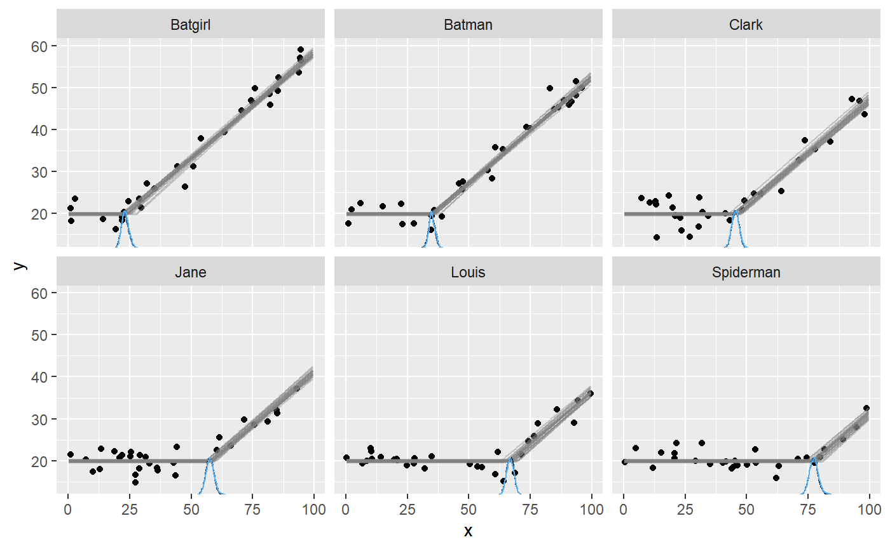

Varying change points with mcp
Jonas Kristoffer Lindeløv
2020-01-05
Source:vignettes/varying.Rmd
varying.RmdA unique feature of mcp is modeling change points as varying effects (sometimes called “random effects”). This has the advantage that you can let the change point vary by a factor while keeping other parameters common across varying factor levels.
This article in brief:
- How to simulate varying change points
- Get posteriors using
ranef(fit) - Plot using
plot(fit, facet_by="my_group")andplot_pars(fit, pars = "varying", type = "dens_overlay", ncol = 3). - The default priors restrict varying change points to lie between the two adjacent change points.
- The article on modeling variance via
sigma()contains an example on varying change points as well.
Specifying varying change points
You specify varying effects using the classical lmer syntax (1|group). Currently (v. 0.1) mcp only support varying intercepts. For example, here we model a varying change point between a plateau and a joined slope:
You can have multiple varying change points with multiple groupings:
model = list(
y ~ 1, # int_1
1 + (1|id) ~ 0 + x, # cp_1, cp_1_sd, cp_1_id[i]
1 + (1|species) ~ 0, # cp_2, cp_2_sd, cp_2_species[i]
(1|id) ~ 1 # cp_3 (implicit), cp_3_sd, cp_3_id[i]
)Here are some properties of the change point varying effects:
Zero centered: The varying effects are zero-centered around the associated group-level change point. In other words, the sum of all varying effects are exactly zero. This constraint is necessary for the parameters to be identifiable.
Hierarchical: Consider the first change point, cp_1, and it’s associated varying effects, cp_1_id. By default, it is modeled as sampled from (nested within) the group-level change point, cp_1, as well as a spread, cp_1_sd.
Constraints: The varying effects are constrained to lie (1) in the observed range of the x-axis, and/or (2) between the two adjacent change points. That is, all cp_1_id are between min(x) and cp_2. All cp_2_species are between cp_1 and cp_3 and all cp_3_id are between cp_2 and max(x). These constraints are enforced through truncation of the default prior (fit$prior) and you can override them by specifying a manual prior (see vignette(“priors”)).
Simulating varying effects
Let us do a worked example, simulating the varying change point between a plateau and a slope:
It is quite similar to simulating non-varying data, except that we need to simulate some varying offsets before passing all parameters to empty$simulate:
library(mcp)
empty = mcp(model, sample = FALSE)
library(dplyr)
varying = c("Clark", "Louis", "Batman", "Batgirl", "Spiderman", "Jane")
df = data.frame(
x = runif(length(varying) * 30, 0, 100), # 30 data points for each
id = rep(varying, each = 30) # the group names
)
df$id_numeric = as.numeric(as.factor(df$id)) # to positive integers
df$y = empty$simulate(df$x,
# Population-level:
int_1 = 20, x_2 = 0.5, cp_1 = 50, sigma = 2,
# Varying: zero-centered and 10 between each level
cp_1_id = 10 * (df$id_numeric - mean(df$id_numeric)))
df## x id id_numeric y
## 1 33.1750223 Clark 3 18.91755
## 2 94.9251489 Clark 3 46.58185
## 3 2.8842972 Clark 3 18.09860
## 4 66.7335683 Clark 3 27.78131
## 5 66.3343874 Clark 3 31.06984
## 6 91.4709595 Clark 3 43.86298
## 7 49.3278482 Clark 3 22.77321
## 8 27.4492045 Clark 3 19.06895
## 9 18.5286428 Clark 3 19.35421
## 10 30.9988145 Clark 3 18.74855
## 11 70.5422589 Clark 3 33.10042
## 12 31.9299078 Clark 3 22.15523
## 13 80.1597175 Clark 3 38.39460
## 14 13.8713671 Clark 3 19.93272
## 15 20.1397074 Clark 3 19.18865
## 16 39.2124244 Clark 3 19.80598
## 17 71.7094248 Clark 3 30.25854
## 18 77.3550155 Clark 3 32.44052
## 19 54.3277326 Clark 3 24.22828
## 20 32.6658716 Clark 3 19.52319
## 21 48.5421029 Clark 3 21.20077
## 22 78.4693393 Clark 3 36.02937
## 23 80.5876435 Clark 3 41.45155
## 24 29.9807366 Clark 3 18.72527
## 25 54.8188756 Clark 3 26.59994
## 26 35.4620212 Clark 3 20.90003
## 27 37.9930230 Clark 3 21.61682
## 28 24.4648033 Clark 3 20.60932
## 29 26.8223916 Clark 3 18.85769
## 30 73.5974516 Clark 3 32.48876
## 31 28.5945541 Louis 5 21.15609
## 32 57.3357784 Louis 5 19.31437
## 33 80.3753625 Louis 5 27.00193
## 34 51.5597364 Louis 5 20.15992
## 35 92.4994902 Louis 5 34.22002
## 36 47.3395522 Louis 5 18.89724
## 37 70.7217738 Louis 5 24.30456
## 38 32.1675132 Louis 5 17.22288
## 39 96.0627885 Louis 5 35.60438
## 40 97.1727393 Louis 5 31.99723
## 41 85.0871361 Louis 5 28.19515
## 42 6.8208421 Louis 5 19.33109
## 43 88.8583304 Louis 5 28.03700
## 44 38.9563337 Louis 5 20.01064
## 45 50.2640681 Louis 5 15.40707
## 46 8.0114981 Louis 5 19.06718
## 47 7.7987064 Louis 5 20.20000
## 48 93.9909373 Louis 5 34.32500
## 49 71.9257898 Louis 5 25.87799
## 50 92.8684321 Louis 5 31.68633
## 51 97.1369090 Louis 5 32.20823
## 52 50.9064073 Louis 5 18.96588
## 53 37.5578514 Louis 5 20.17296
## 54 35.5951224 Louis 5 19.09276
## 55 0.5316059 Louis 5 15.62799
## 56 74.3231418 Louis 5 25.94403
## 57 74.2302525 Louis 5 22.76157
## 58 70.3375262 Louis 5 23.96250
## 59 31.7974728 Louis 5 20.87845
## 60 85.9257008 Louis 5 29.59288
## 61 9.2909877 Batman 2 18.69503
## 62 57.3127250 Batman 2 30.71918
## 63 95.3676352 Batman 2 49.08646
## 64 69.1812671 Batman 2 35.95556
## 65 99.2268156 Batman 2 49.87248
## 66 18.1884743 Batman 2 19.33940
## 67 60.8427322 Batman 2 35.38798
## 68 75.3392278 Batman 2 40.20528
## 69 19.5461666 Batman 2 21.51774
## 70 19.6859552 Batman 2 19.10795
## 71 53.1792842 Batman 2 27.99404
## 72 22.2021818 Batman 2 20.34081
## 73 9.7892860 Batman 2 20.32675
## 74 97.5147632 Batman 2 49.48079
## 75 13.2037081 Batman 2 21.13517
## 76 18.7582008 Batman 2 17.98807
## 77 22.8907934 Batman 2 18.28183
## 78 96.4326776 Batman 2 51.32740
## 79 34.8718933 Batman 2 20.08667
## 80 22.8491112 Batman 2 21.10238
## 81 39.0075328 Batman 2 22.90768
## 82 62.8275838 Batman 2 37.20752
## 83 58.9010522 Batman 2 33.02424
## 84 33.1394632 Batman 2 20.66252
## 85 75.9858318 Batman 2 39.61322
## 86 93.6289605 Batman 2 50.48038
## 87 44.1184952 Batman 2 23.38907
## 88 32.8684753 Batman 2 26.04028
## 89 55.4164605 Batman 2 26.37314
## 90 5.4797475 Batman 2 18.62343
## 91 99.1025583 Batgirl 1 57.06895
## 92 89.0930289 Batgirl 1 53.56244
## 93 26.2927987 Batgirl 1 18.82109
## 94 82.6779934 Batgirl 1 52.65519
## 95 10.9892832 Batgirl 1 24.04992
## 96 52.7761914 Batgirl 1 34.01997
## 97 43.6263840 Batgirl 1 31.28762
## 98 44.3923009 Batgirl 1 24.92169
## 99 65.8029425 Batgirl 1 40.63538
## 100 54.8335571 Batgirl 1 36.00201
## 101 35.3706708 Batgirl 1 23.26965
## 102 82.2210002 Batgirl 1 47.52401
## 103 66.4933288 Batgirl 1 40.33247
## 104 35.3720702 Batgirl 1 23.26941
## 105 0.4237780 Batgirl 1 20.27431
## 106 92.0265072 Batgirl 1 53.83852
## 107 25.0812084 Batgirl 1 17.76193
## 108 86.7013299 Batgirl 1 52.10944
## 109 14.8261581 Batgirl 1 19.13825
## 110 90.8009367 Batgirl 1 53.03431
## 111 90.1519185 Batgirl 1 50.29730
## 112 4.6898876 Batgirl 1 17.19499
## 113 1.3246209 Batgirl 1 17.86080
## 114 53.9985692 Batgirl 1 34.60930
## 115 31.2802920 Batgirl 1 21.24169
## 116 1.1600457 Batgirl 1 19.88527
## 117 38.1131757 Batgirl 1 27.69870
## 118 66.7957966 Batgirl 1 42.04866
## 119 45.3837207 Batgirl 1 29.20673
## 120 80.8433630 Batgirl 1 48.21171
## 121 96.0958113 Spiderman 6 31.49201
## 122 46.4693269 Spiderman 6 20.87523
## 123 16.9555373 Spiderman 6 19.56713
## 124 66.5487318 Spiderman 6 21.04404
## 125 46.4294512 Spiderman 6 19.29084
## 126 56.0202492 Spiderman 6 21.27548
## 127 68.2448724 Spiderman 6 19.61485
## 128 2.5532469 Spiderman 6 18.60253
## 129 69.9333416 Spiderman 6 19.69766
## 130 91.7647477 Spiderman 6 28.56942
## 131 90.8592714 Spiderman 6 28.55599
## 132 93.6408787 Spiderman 6 28.83063
## 133 33.0098815 Spiderman 6 19.31716
## 134 54.1891273 Spiderman 6 18.51717
## 135 5.1071289 Spiderman 6 22.01692
## 136 97.1071020 Spiderman 6 33.77195
## 137 9.7516895 Spiderman 6 18.77803
## 138 44.2146603 Spiderman 6 20.00491
## 139 69.4315631 Spiderman 6 19.53341
## 140 58.9704486 Spiderman 6 21.57479
## 141 52.8580927 Spiderman 6 19.63185
## 142 75.5203890 Spiderman 6 19.90463
## 143 7.6034100 Spiderman 6 20.61233
## 144 84.4690084 Spiderman 6 25.22858
## 145 29.4886551 Spiderman 6 22.66057
## 146 25.0805200 Spiderman 6 20.11393
## 147 89.8072291 Spiderman 6 26.32066
## 148 28.5707921 Spiderman 6 21.43363
## 149 86.4704090 Spiderman 6 24.88408
## 150 58.6572576 Spiderman 6 21.96109
## 151 95.0522630 Jane 4 38.06824
## 152 84.2058571 Jane 4 32.14799
## 153 70.7952573 Jane 4 24.08919
## 154 64.7275723 Jane 4 25.95951
## 155 7.5337734 Jane 4 23.25907
## 156 42.9396509 Jane 4 20.59846
## 157 4.6086654 Jane 4 19.13259
## 158 61.6271520 Jane 4 23.09032
## 159 14.9573507 Jane 4 20.01085
## 160 73.5339868 Jane 4 29.97746
## 161 55.8907655 Jane 4 20.56875
## 162 92.8956690 Jane 4 37.66811
## 163 74.9341433 Jane 4 29.78720
## 164 99.1056949 Jane 4 42.05636
## 165 68.4341440 Jane 4 27.65783
## 166 11.5077944 Jane 4 20.11884
## 167 67.5302884 Jane 4 21.93789
## 168 17.2309739 Jane 4 18.32796
## 169 61.0152666 Jane 4 24.08953
## 170 58.4754855 Jane 4 22.11526
## 171 74.7208458 Jane 4 28.90715
## 172 16.3637219 Jane 4 20.39272
## 173 21.4326270 Jane 4 20.83282
## 174 85.2040610 Jane 4 36.00524
## 175 38.9540888 Jane 4 20.83099
## 176 85.9608937 Jane 4 38.59322
## 177 10.9130913 Jane 4 23.10889
## 178 13.0783109 Jane 4 18.70294
## 179 30.2820038 Jane 4 20.74747
## 180 57.5796241 Jane 4 23.94904Here, we “translated” the id to an offset on the x-axis by multiplying with 10. We subtracted the mean to make the varying effects zero-centered around cp_1. The result:

Summarise and plot varying effects.
Fitting the model is simple:
If we just use plot(fit), we would see all points in one plot. We want to facet by id, so:

It seems that mcp did a good job of recovering the change points. There is a lot of information in this data, since the intercept and the slope on each side of the (varying) change point is shared between participants here.
If you use summary(fit) (or fixef(fit)) you will get the posteriors for the population-level effects. To get the random effects, do:
## name match sim mean lower upper Rhat n.eff
## 1 cp_1_id[Batgirl] OK -25 -25.037779 -26.446342 -23.621530 1.0000397 6032
## 2 cp_1_id[Batman] OK -15 -14.955790 -16.659256 -13.318725 1.0002404 6094
## 3 cp_1_id[Clark] OK -5 -4.998653 -6.655961 -3.402067 1.0000792 4166
## 4 cp_1_id[Jane] OK 5 4.978247 3.318662 6.526709 0.9999848 4791
## 5 cp_1_id[Louis] OK 15 16.103747 14.411616 17.701612 1.0005380 4275
## 6 cp_1_id[Spiderman] OK 25 23.910229 21.819158 25.986350 0.9999900 5824Inspecting the sim and match columns, we see that they recovered the simulation parameters well.
Good convergence is not always as obvious as in this example. While plot_pars(fit) show population-level parameters only, you can do this to get varying effects only:

Notice the use of the ncol argument to set the number of columns. You will often have many levels on your varying effect, so this is useful to get a good view of all of them. Naturally, you can do this for almost all kinds of plots.
Using pars = "varying" will plot all varying effects. This may be too much if you have multiple varying effects. To select just one, use regular expression in regex_pars. Two very handy operators are “^” (begins with) and “$” (ends with). Just to show that this “faceting” works for almost all of the many plot types, we now do two columns of "dens_overlay:

Priors for varying effects
You can see the priors of the model like this:
## [,1]
## cp_1 "dunif(MINX, MAXX)"
## cp_1_sd "dnorm(0, (MAXX - MINX) / 2) T(0, )"
## cp_1_id "dnorm(0, cp_1_sd) T(MINX - cp_1, MAXX - cp_1)"
## int_1 "dt(0, 3 * SDY, 3)"
## x_2 "dt(0, SDY / (MAXX - MINX), 3)"
## sigma_1 "dnorm(0, SDY) T(0, )"The priors cp_1_sd is the population-level standard deviation of cp_1_id, the latter of which is applied to all levels of id. This is also apparent if you inspect the JAGS code for this model. The truncation of varying effects is quite contrived, but just keeps them between the two adjacent (population-level) change points.
JAGS code
Here is the JAGS code for the model used in this article:
##
## model {
##
## # Priors for population-level effects
## cp_0 = MINX # mcp helper value.
## cp_2 = MAXX # mcp helper value.
##
## cp_1 ~ dunif(MINX, MAXX)
## cp_1_sd ~ dnorm(0, 1/((MAXX-MINX)/2)^2) T(0, )
## int_1 ~ dt(0, 1/(3*SDY)^2, 3)
## x_2 ~ dt(0, 1/(SDY/(MAXX-MINX))^2, 3)
## sigma_1 ~ dnorm(0, 1/(SDY)^2) T(0, )
##
## # Priors for varying effects
## for (id_ in 1:n_unique_id) {
## cp_1_id_uncentered[id_] ~ dnorm(0, 1/(cp_1_sd)^2) T(MINX - cp_1, MAXX - cp_1)
## }
## cp_1_id = cp_1_id_uncentered - mean(cp_1_id_uncentered) # vectorized zero-centering
##
##
## # Model and likelihood
## for (i_ in 1:length(x)) {
## X_1_[i_] = min(x[i_], (cp_1 + cp_1_id[id[i_]]))
## X_2_[i_] = min(x[i_], cp_2) - (cp_1 + cp_1_id[id[i_]])
##
## # Fitted value
## y_[i_] =
##
## # Segment 1: y ~ 1
## (x[i_] >= cp_0) * int_1 +
##
## # Segment 2: y ~ 1 + (1 | id) ~ 0 + x
## (x[i_] >= (cp_1 + cp_1_id[id[i_]])) * x_2 * X_2_[i_]
##
## # Fitted standard deviation
## sigma_[i_] =
## (x[i_] >= cp_0) * sigma_1
##
## # Likelihood and log-density for family = gaussian()
## y[i_] ~ dnorm((y_[i_]), 1 / sigma_[i_]^2)
## loglik_[i_] = logdensity.norm(y[i_], (y_[i_]), 1 / sigma_[i_]^2)
## }
## }